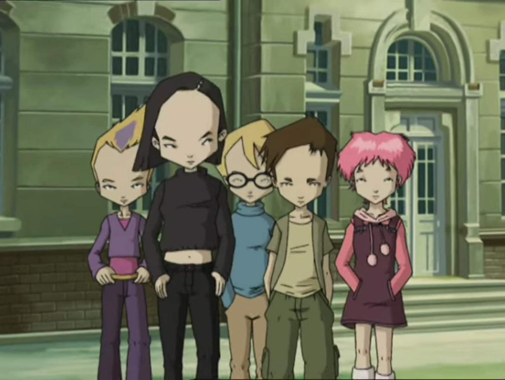
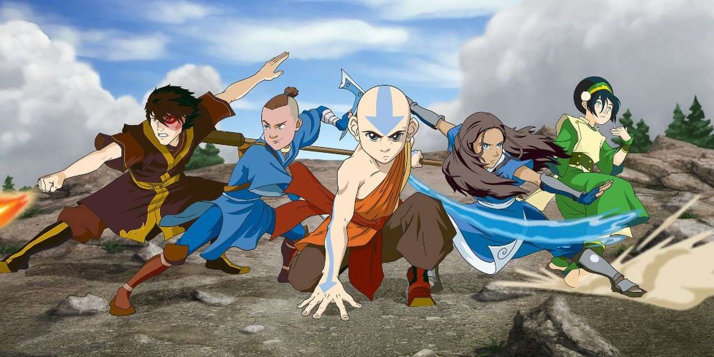
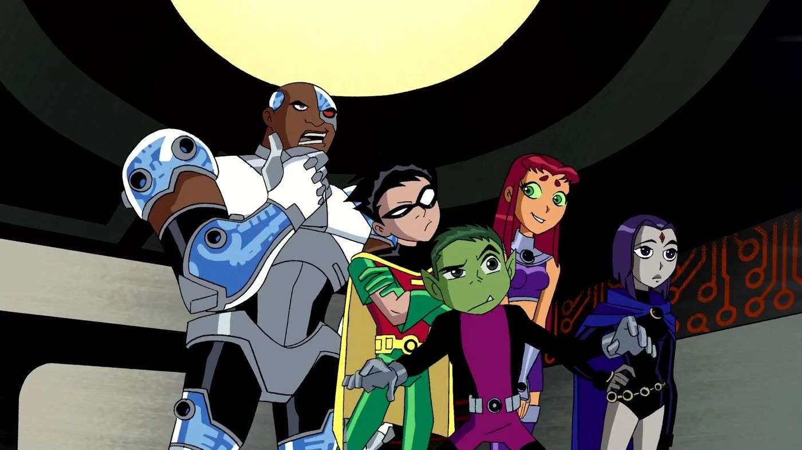
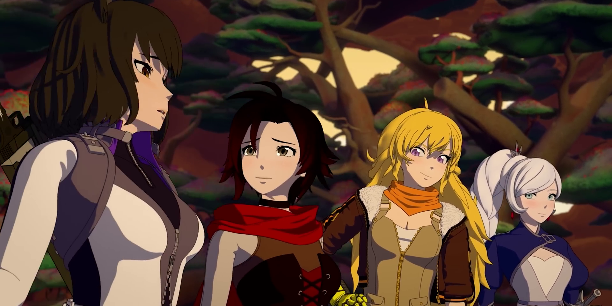

Di zaman sekarang, jarang ada orang yang masih suka menonton kartun, karena grafiknya berupa 2D dan alur cerita yang sederhana. Kebanyakan orang-orang suka menonton film dan drama. Contoh-contoh yang paling terkenal adalah film-film Amerika Serikat dan drama-drama Korea Selatan.
Kebanyakan kartun mempunyai alur cerita yang sederhana, membutuhkan satu episode untuk mengalahkan antagonisnya, biasanya di bagian klimaks pada suatu episode. Tetapi ada juga kartun yang mempunyai alur cerita yang kompleks seperti pada drama atau anime. Kartun yang sejenis itu membutuhkan setidaknya beberapa episode sampai satu atau beberapa season untuk mengalahkan antagonisnya, entah itu di bagian awal, pertengahan, atau akhir dari sebuah episode.
Walaupun begitu, ada beberapa kartun yang bagus dan seru untuk ditonton. Apa saja itu? Yuk kita lihat bersama!
1. Code Lyoko

Anak kelahiran tahun 2004 mana yang tidak tahu kartun ini? Kartun ini tentunya tidak asing bagi anak-anak kelahiran 2004. Dari bangku TK sampai kelas 3 SD, setiap setelah pulang sekolah pasti ada nonton kartun ini di channel Spacetoon sebelum channelnya dihapus, tepatnya pada tanggal 18 Mei 2013. Betapa nostalgia untuk mengingat masa-masa lalu saat masih bisa menonton Spacetoon sebelum akhirnya dihapus dan berpindah menonton Naruto di Global TV dan film-film Barat. Kartun ini juga terkenal karena bentuk dahi/jidat yang lebar atau sebutannya jenong.
Code Lyoko merupakah kartun asal Prancis yang dirilis pada tanggal 3 September 2003 dan selesai pada tanggal 10 November 2007. Memiliki total 97 episode (95 episode dan 2 spesial) dengan 4 season, kartun ini diproduksi oleh Antefilms Productions di season 1 dan MoonScoop Group di season 2 sampai season 4. Genrenya berupa aksi, petualangan, dan fiksi ilmiah. Walaupun episode spesialnya (XANA Awakens) dirilis setelah season 2 tamat (episode 52), disarankan untuk menonton episode spesialnya dulu, baru nanti episode 1 sampai tamat (episode 95), karena berdasarkan urutan kronologis atau waktu.
Kartun ini bercerita tentang sekelompok remaja yang bernama Ulrich, Yumi, Odd, dan Jeremy yang menemukan sebuah unit AI di suatu pabrik yang sudah ditingggalkan. Di episode spesial XANA Awakens, semua anggota adalah murid kelas 7 (SMP 1), kecuali Yumi yang kelas 8 (SMP 2). Di season 1 dan season 2, mereka sudah naik kelas, begitu juga di season 3 dan season 4. Mereka tinggal di asrama Sekolah Kadic, kecuali Yumi yang tinggal di rumah bersama keluarganya. Mereka juga mendapatkan makan pagi, siang, dan malam gratis, seperti sekolah-sekolah di Amerika Serikat. Ulrich dan Odd tinggal sekamar bersama anjing milik Odd yang bernama Kiwi.
Mereka mengikuti kegiatan belajar di sekolah seperti biasa, sampai ada makhluk yang bernama XANA mengakibatkan kekacauan pada dunia asli. Ketika itu terjadi, mereka akan meminta izin ke guru untuk ke toilet atau ke UKS, padahal aslinya mereka mau ke dunia virtual untuk menghentikan XANA. Dari sekolah ke pabrik tersebut, mereka pergi ke sebuah hutan lewat pintu masuk sekolah, jalan lebih dalam sampai menemukan tutupan lubang untuk masuk ke sebuah selokan, dan menggunakan skateboard untuk menuju ke tangga yang akan ke jembatan menuju pabrik. Setelah sampai, mereka masuk ke lift menuju arah bawah. Anggota yang lain masuk ke sebuah alat untuk ke dunia virtual, sementara itu Jeremy akan menggunakan komputer yang bisa melihat sisa HP (health point) masing-masing anggota, jenis monster yang akan dihadapi, dan lokasi menara. Di dalam dunia virtual, ada empat macam tempat (biome sebutannya kalau di game Minecraft), yaitu padang gurun, hutan, kutub, dan pegunungan. Beda tempat, beda juga monsternya, tetapi juga ada yang sama. Di sana, mereka bertemu dengan Aelita, seorang perempuan yang terjebak di dunia virtual, dan hanya dia yang bisa masuk ke menara untuk menonaktifkannya, dan kembali ke masa lalu, otomatis kekacauan akan hilang, begitu juga seterusnya. Di suatu episode, Aelita berhasil kembali ke dunia nyata dan bersekolah seperti murid-murid lainnya.
Tahukah kamu? Di aplikasi Spotify, gambar cover album lagu openingnya yang berjudul 'A World Without Danger' oleh Franck Keller, Ygal Amar, dan Justine Sainte, adalah gambar Ulrich dan Yumi sedang duduk di kursi taman. Dari awal seri sampai akhir, lagu opening Code Lyoko tidak pernah berubah.
Awas spoiler di bawah!
Ulrich sudah menyukai Yumi dari awal seri, tetapi tidak tahu apakah Yumi menyukai Ulrich atau tidak, hubungan mereka kompleks. Walaupun itu, banyak fans yang menjodohkan Ulrich dan Yumi. Aelita kembali ke dunia nyata di bagian akhir episode 25. Ia terjebak di dunia virtual karena ayahnya ingin dia berada di tempat yang aman. Di episode terakhir, mereka berhasil mematikan mesin menuju dunia virtual. Mulai dari season 4 (episode 66), pakaian mereka di dunia nyata sudah berubah, begitu juga kostum mereka di dunia virtual.
2. Avatar

Avatar merupakan kartun asal Amerika Serikat yang diproduksi oleh Nickelodeon Animation Studio. Kartun ini memiliki dua seri, yaitu Avatar: The Last Airbender dan Avatar: The Legend of Korra. Seri pertamanya (The Last Airbender) dirilis pada tanggal 21 Februari 2005 dan selesai pada tanggal 19 Juli 2008. Seri keduanya (The Legend of Korra) dirilis pada tanggal 14 April 2012 dan selesai pada tanggal 19 Desember 2014. "The Last Airbender" mempunyai total 61 episode. Masing-masing season 1 (Book One: Water) dan season 2 (Book Two: Earth) terdiri dari 20 episode, dan season 3 (Book Three: Fire) terdiri dari 21 episode. "The Legend of Korra" mempunyai total 52 episode. Season 1 (Book One: Air) terdiri dari 12 episode, season 2 (Book Two: Spirit) terdiri dari 14 episode, dan masing-masing season 3 (Book Three: Change) dan season 4 (Book Four: Balance) terdiri dari 13 episode. Kedua seri mempunyai genre aksi dan petualangan, tetapi ada yang membedakan. "The Last Airbender" mempunyai genre komedi drama dan fantasi, sedangkan "The Legend of Korra" mempunyai genre drama dan steampunk.
Serial "The Last Airbender" menceritakan tentang petualangan dari karakter utama yang bernama Aang. Ada empat macam pengendali elemen, yaitu air, tanah, api dan angin. Misi dari seri pertama adalah untuk mendamaikan dunia dengan mengalahkan raja dari kerajaan api yang bernama Ozai dan menghentikan perang seratus tahun terhadap kerajaan api setelahnya, dan tentu saja, untuk bisa mengendalikan semua empat elemen. Ia bertemu dengan Toph, Katara, Sokka, dan Suki. Nantinya, ia juga bertemu dengan Zuko. Awalnya, Zuko adalah salah satu antagonis utama karena ia adalah salah satu anggota kerajaan api, kemudian ia keluar dari kerajaan api karena alasan tertentu. Dua teman baik Azula, Mai dan Ty Lee menghianati Azula juga karena alasan tertentu.
Serial "The Legend of Korra" menceritakan tentang kejadian-kejadian setelah perang seratus tahun. Aang dan Ozai membawa orang-orang dari empat kerajaan (air, tanah, api, dan angin) dan menemukan Republik Kesatuan Bangsa-Bangsa, ibukotanya adalah Kota Republik. Di suatu episode, Aang meninggal dan tereinkanarsi menjadi Korra. Tentu saja misinya adalah untuk mendamaikan dunia dan untuk bisa mengendalikan semua empat elemen.
Tahukah kamu? Hanya Azula yang merupakan pengguna api biru. Api biru mempunyai suhu yang jauh lebih panas daripada api biasa yang berwarna merah. Banyak fans Avatar yang bilang kalau Korra adalah tomboy karena kepribadiannya yang tangguh dan keras kepala.
Awas spoiler di bawah!
The Last Airbender
Aang lahir pada tahun 12 AG dan meninggal pada tahun 153 AG, di season 1 episode 1 pada seri selanjutnya (The Legend of Korra). Ia sebenarnya berusia 112 tahun, hanya ketika ia berusia dua belas tahun, ia kena beku di gunung es selama 100 tahun lamanya, tetapi setelah keluar, ia masih terlihat muda. Zuko mulai mengikuti tim Aang di season 3. Alasan Zuko keluar dari kerajaan api adalah karena ayahnya, Ozai, yang merupakan raja dari kerajaan api, memanjakan Azula dan mengabaikan Zuko karena ibunya, Ursa lebih menyayanginya daripada Azula. Ayahnya menganggap Zuko sebagai kegagalan. Di akhir seri, setelah Ozai dikalahkan, Zuko menjadi raja kerajaan api yang baru. Aang berakhir dengan Katara sebagai pasutri (pasangan suami istri) dan mempunyai tiga anak, salah satunya pengendali elemen. Di masa lalu, Azula, Mai, dan Ty Lee adalah trio yang selalu bersama (bisa juga disebut tiga serangkai). Azula mengetahui Mai menyukai Zuko dan ia, bersama Ty Lee, mengusik mereka berdua. Tetapi itu, hubungan mereka sering putus-nyambung. Mai dan Ty Lee menghianati Azula karena mereka sadar dimanipulasi olehnya. Zuko mempunyai anak yang bernama Izumi, tetapi tidak diketahui siapa ibunya Izumi. Banyak fans mengatakan kemungkinan besar Mai adalah ibunya. Secara kebetulan, Izumi berarti "air mancur" dalam bahasa Jepang, anaknya dinamakan karena insiden masa kecil Mai dan Zuko jatuh ke dalam air mancur.
The Legend of Korra
Awalnya, Korra menyukai Mako, tetapi kemudian berubah menyukai Asami. Mako pernah mencintai Asami dan Korra , tentu saja dalam waktu yang berbeda, tidak mungkin langsung mencintai keduanya, dan akhirnya hubungan mereka berakhir. Penjodohan Korra dan Asami adalah percintaan antarperempuan yang populer sampai disingkat menjadi Korrasami.
3. Teen Titans

Teen Titans merupakan kartun asal Amerika Serikat yang diproduksi oleh Warner Bros Animation dan DC Comics. Memiliki total 65 episode dengan 5 season, 1 spesial, dan 1 movie. Dirilis pada tanggal 19 Juli 2003 dan selesai pada tanggal 15 September 2006. Episode spesialnya (The Lost Episode) dirilis pada pertengahan season 3 dan movienya (Teen Titans: Trouble in Tokyo) dirilis delapan bulan setelah season 5 tamat. Sesuai studio produksinya, DC Comics, kartun ini bergenre superhero.
Kartun ini bercerita tentang satu tim yang terdiri dari lima anggota. Tim tersebut diketuai oleh Robin, anggota lainnya terdiri dari Beast Boy, Cyborg, Starfire, dan Raven. Mereka tinggal di sebuah menara besar berbentuk huruf T di sebuah kota yang bernama Jump City. Mereka mempunyai kamar masing-masing, isi kamarnya pun juga beda-beda. Menaranya juga ada garasi yang isinya mobil yang dimiliki oleh Cyborg. Selama seri berjalan, mereka berhadapan dengan berbagai antagonis seperti Brotherhood of Evil, Trigon, Blackfire, HIVE Five, Red X, dan Slade. Khususnya Red X, ia tidak sepenuhnya antagonis. Selain itu, Teen Titans juga bertemu dengan tim lainnya, seperti Titans East dan superhero lainnya.
Tahukah kamu? Robin sebenarnya adalah anak adopsi dari Batman, bagi yang belum pernah melihat serial/komik Batman. Ada empat generasi dari Robin, yaitu Dick Grayson (yang di seri ini), Jason Todd, Tim Drake, dan Damian Wayne, secara berurutan.
Awas spoiler di bawah!
Ada dua pasangan jodoh yang populer, yaitu Robstar atau lebih umumnya DickKory, dan BBRae. DickKory adalah penjodohan antara Robin dan Starfire, sedangkan BBRae adalah penjodohan antara Beast Boy dan Raven. Penamaan DickKory lebih umum daripada Robstar karena Starfire mempunyai nama asli Koriand'r, sementara itu Robin yang pertama mempunyai nama asli Richard "Dick" Grayson, kemudian sekitar usia 17/18 tahun, ia mengubah identitasnya menjadi Nightwing, bisa dilihat di episode 14. Nama asli Starfire seperti itu karena ia bukan berasal dari bumi, melainkan dari dunia Tamaran, bisa dilihat di episode 29. Raven juga bukan berasal dari bumi, melainkan dari dunia Azarath, bisa dilihat dari episode 46. Di episode 28 dan episode 61, Red X membantu Robin, tetapi tidak diketahui alasannya. Di bagian akhir movie, Robin dan Starfire berciuman di tengah hujan sambil dilihat oleh ketiga anggota lainnya.
4. RWBY

RWBY sebenarnya merupakan serial web asal Amerika Serikat, bisa juga dibilang kartun, yang diproduksi oleh Rooster Teeth Animation. Jika kartun lain mempunyai season dan episode, maka RWBY menyebutnya sebagai volume dan chapter, berturut-turut. Seri ini memiliki 116 episode dengan 9 season. Dirilis pada tanggal 18 Juli 2013 dan masih belum tamat, setidaknya tidak selama anime One Piece. Masing-masing season 1 dan 5 terdiri dari 16 episode, masing-masing season 2, 3, dan 4 terdiri dari 12 episode, masing-masing season 6 dan 7 terdiri dari 13 episode, season 8 terdiri dari 14 episode, dan season 9 terdiri dari 10 episode. Kartun ini bergenre petualangan, aksi, dan fantasi ilmiah.
Kartun ini bercerita tentang sekelompok gadis yang bernama Ruby, Weiss, Blake, dan Yang, yang diketuai oleh Ruby. Alur tempat tersebut di sebuah dunia fiksi Remnant yang terdiri dari empat kerajaan, yaitu Vale, Mistral, Atlas and Vacuo, yang diserbu oleh monster Grimm. Mereka berempat dan murid-murid lainnya bersekolah di Akademi Beacon untuk melatih diri mereka sendiri menjadi pemburu dan petarung yang hebat. Selama di akademi, mereka berempat telah bertemu beberapa murid lainnya dan menjadi teman. Seiring berjalannya seri, mereka berempat ada melawan karakter-karakter antagonis dan bertemu karakter-karakter lainnya.
Tahukah kamu? Tim RWBY dinamakan didasarkan pada singkatan dari inisial nama mereka masing-masing, yaitu Ruby, Weiss, Blake, dan Yang. Secara kebetulan, inisial tersebut juga merujuk pada warna dominan mereka, yaitu red (merah), white (putih), black (hitam), dan yellow (kuning).
Awas spoiler di bawah!
Ruby mempunyai kakak tiri dari pihak ayah yaitu Yang. Ada dua pasangan jodoh yang populer, kedua pasangan tersebut melibatkan dua perempuan, yaitu Bumbleby dan White Rose. Bumbleby adalah penjodohan antara Yang dan Blake, sedangkan White Rose adalah penjodohan antara Weiss dan Ruby. Di season 9 episode 6 (episode 112), Yang dan Blake berciuman. Di masing-masing season 4 dan season 7, kebanyakan karakter mengubah kostumnya.
Itu adalah beberapa kartun yang bagus dan seru untuk ditonton, walaupun masih ada satu kartun lainnya yang bisa masuk ke dalam list, contohnya Generator Rex. Tetapi kartun ini tidak sebagus atau seseru kartun yang ada di atas.